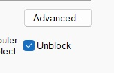

Alpha
Loading...
Try the latest -alpha build before features land in stable.
One hotkey summons a menu of your apps, shortcuts, and system controls right at your cursor: the quick-select wheel from games like Anno or Crysis, on your desktop.
Download QuickPickThink Stream Deck, but software.
No extra hardware, no extra desk space.
Adjust brightness, volume, and media playback right from the same menu, with no extra hotkeys or tray icons to hunt for.
Pin the apps, shortcuts, and tools you use most, and shape the grid around how you actually work.
Give each app its own configuration. The same hotkey brings up browser actions in Chrome and editing actions in Photoshop. QuickPick follows whatever you're working in.
Launch an app from a hex, summon the menu again inside it to get that app's own configuration, and let QuickPick type your username and password straight into the prompt, all from one hotkey.
Peek at live previews of your open windows right from the hex menu and jump straight to the one you need, with no blind alt-tabbing.
What do you think QuickPick should feature? Share your ideas in our Discord community.
Actual QuickPick interface may vary.
Go on, put your apps and actions within reach.
Loading...
Try the latest -alpha build before features land in stable.
.exe, open Properties, and check Unblock in the Security section.

QuickPick is actively evolving, and we'd love your input.
Join us on Discord and help shape what comes next.